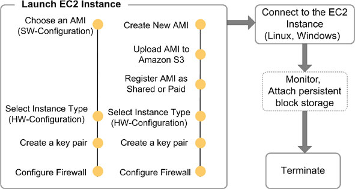
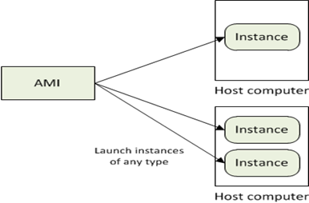
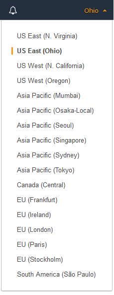

Amazon Elastic Cloud Computing EC2Link
IntroductionLink
Amazon EC2 presents a true virtual computing environment, allowing cli- ents to use a web-based interface to obtain and manage services needed to launch one or more instances of a variety of operating systems (OSs). Cli- ents can load the OS environments with their customized applications. They can manage their network’s access permissions and run as many or as few systems as needed. In order to use Amazon EC2, clients first need to create an Amazon Machine Image (AMI). This image contains the applica- tions, libraries, data, and associated configuration settings used in the virtual computing environment. Amazon EC2 offers the use of preconfigured images built with templates to get up and running immediately. Once users have defined and configured their AMI, they use the Amazon EC2 tools provided for storing the AMI by uploading the AMI into Amazon S3. Ama- zon S3 is a repository that provides safe, reliable, and fast access to a client AMI. Before clients can use the AMI, they must use the Amazon EC2 web service to configure security and network access.
Amazon EC2 is the heart of the Amazon cloud. It provides a web services API for provisioning, managing, and deprovisioning virtual servers inside the Amazon cloud.
In other words, any application anywhere on the Internet can launch a virtual server in the Amazon cloud with a single web services call.
At the time of this, Amazon’s EC2 U.S. footprint spans three data centers on the East Coast of the U.S. and two in Western Europe. You can sign up separately for an Amazon European data center account, but you cannot mix and match U.S. and European environments.
The servers in these environments run a highly customized version of the Open Source Xen hyper-visor using para virtualization.
This Xen environment enables the dynamic provisioning and deprovisioning of servers, as well as the capabilities necessary to provide isolated computing environment for guest servers.
When you want to start up a virtual server in the Amazon environment, you launch a new node based on a predefined Amazon machine image (AMI).
The AMI includes your operating system and any other prebuilt software. Most people start with a standard AMI based on their favorite operating system, customize it, create a new image, and then launch their servers based on their custom images. By itself, EC2 has two kinds of storage:
- Ephemeral storage tied to the node that expires with the node
- Block storage that acts like a SAN and persists across time
Amazon has provided a popular universal and comprehensive solution to Cloud Computing, called the Amazon Elastic Compute Cloud (EC2) (2010). This solu- tion was released as a limited public beta on August 25, 2006, but grew rapidly in the following years. After Amazon added many important and powerful features to EC2, it dropped the beta label on October 23, 2008. Today EC2 provides complete control over a customer’s computing resources, so new server instances can be set up and booted in minutes, and their capacity can be scaled quickly through a simple web service interface.
EC2 provides many useful features for customers, including a mature and inexpensive billing system able to charge for computing at a very fine-grained level (memory usage, CPU usage, data transfer, etc.), deployment between multiple locations,elastic IP addresses,connection to a customer’s existing infrastructure through a Virtual Private Network, monitoring services by Amazon Cloud Watch, and elastic load balancing. EC2 has deployed such fine granularity and precision that it has become a benchmark and model in cloud computing.
| CaaS | Amazon EC2 | GoGrid | Rackspace (cloud server) |
|---|---|---|---|
| Virtualization | Xen | Xen | VMware |
| OS support | Linux, Windows | Linux, Windows | Linux, Windows |
| Server RAM | 1.7 GB and going upto 68.4 GB | 0.5 GB and going up to 8 GB | 256 MB and going up to 16 GB |
| Load Balancer | Amazon Elastic Load Balancer | Free F5 Load Balancer | No |
| Persistent Block Storage | Yes | Yes | Yes |
| Hybrid Hosting | No | Yes | Yes |
| 24/7 Support | No | Yes | Yes |
| Pricing | Billed 0.085 – 3.18 per hour (vary for different Instance and Regions). The Data Transfer rates vary based on where the data goes out to and comes in from with pricing between 0.00 to 0.15 per GB transferred. | Billed 0.19 per GB of deployed RAM per hour and 60 GB of disk, 0.50 per GB of outbound data transferred, and all inbound data transfer is free. | Billed 0.06 per GB of deployed RAM per Hour and 40 GB of disk, 0.05 per GB of inbound data transfer and 0.22 per GB of outbound data transfer. |
| Amazon’s EC2 provides virtual machine based computation environments. It uses the Xen hypervisor (2010) to manage their Amazon Machine Image (AMI) instance. AMI (Amazon EC2, 2010) is “an encrypted machine image that contains all information necessary to boot instances of your software”. Using simple web service interfaces, users can launch, run, monitor and terminate their instances. Moreover they can, on the fly, add any of the above mentioned | |||
| features to their configuration as they desire. |

Many competitors to Amazon also provide persistent internal storage for nodes to make them operate more like a traditional data center. In addition, servers in EC2—like any other server on the Internet—can access Amazon S3 for cloud-based persistent storage. EC2 servers in particular see both cost savings and greater efficiencies in accessing S3.
To secure your network within the cloud, you can control virtual firewall rules that define how traffic can be filtered to your virtual nodes. You define routing rules by creating security groups and associating the rules with those groups. For example, you might create a DMZ group that allows port 80 and port 443 traffic from the public Internet into its servers, but allows no other incoming traffic.
Using Amazon EC2 to Run InstancesLink
During configuration, users choose which instance type(s) and operating system they want to use. Available instance types come in two distinct cate- gories, Standard or High-CPU instances. Most applications are best suited for Standard instances, which come in small, large, and extra-large instance platforms. High-CPU instances have proportionally more CPU resources than random-access memory (RAM) and are well suited for compute-inten- sive applications. With the High-CPU instances, there are medium and extra large platforms to choose from. After determining which instance to use, clients can start, terminate, and monitor as many instances of their AMI as needed by using web service Application Programming Interfaces (APIs) or a wide variety of other management tools that are provided with the service. Users are able to choose whether they want to run in multiple locations, use static IP endpoints, or attach persistent block storage to any of their instances, and they pay only for resources actually consumed. They can also choose from a library of globally available AMIs that provide useful instances. For example, if all that is needed is a basic Linux server, clients can choose one of the standard Linux distribution AMIs.
Amazon EC2 Service CharacteristicsLink
There are quite a few characteristics of the EC2 service that provide signifi- cant benefits to an enterprise. First of all, Amazon EC2 provides financial benefits. Because of Amazon’s massive scale and large customer base, it is an inexpensive alternative to many other possible solutions. The costs incurred to set up and run an operation are shared over many customers, making the overall cost to any single customer much lower than almost any other alter- native. Customers pay a very low rate for the compute capacity they actually consume. Security is also provided through Amazon EC2 web service inter- faces. These allow users to configure firewall settings that control network access to and between groups of instances. Amazon EC2 offers a highly reli- able environment where replacement instances can be rapidly provisioned. When one compares this solution to the significant up-front expendi- tures traditionally required to purchase and maintain hardware, either in- house or hosted, the decision to outsource is not hard to make. Outsourced solutions like EC2 free customers from many of the complexities of capacity planning and allow clients to move from large capital investments and fixed costs to smaller, variable, expensed costs. This approach removes the need to overbuy and overbuild capacity to handle periodic traffic spikes. The EC2 service runs within Amazon’s proven, secure, and reliable network infra- structure and data center locations.
-
Dynamic Scalability:Amazon EC2 enables users to increase or decrease capacity in a few min- utes. Users can invoke a single instance, hundreds of instances, or even thousands of instances simultaneously. Of course, because this is all con- trolled with web service APIs, an application can automatically scale itself up or down depending on its needs. This type of dynamic scalability is very attractive to enterprise customers because it allows them to meet their cus- tomers’ demands without having to overbuild their infrastructure.
-
Full Control of Instances: Users have complete control of their instances. They have root access to each instance and can interact with them as one would with any machine. Instances can be rebooted remotely using web service APIs. Users also have access to console output of their instances. Once users have set up their account and uploaded their AMI to the Amazon S3 service, they just need to boot that instance. It is possible to start an AMI on any number of instances (or any type) by calling the RunInstances API that is provided by Amazon.
-
Configuration Flexibility: Configuration settings can vary widely among users. They have the choice of multiple instance types, operating systems, and software packages. Ama- zon EC2 allows them to select a configuration of memory, CPU, and instance storage that is optimal for their choice of operating system and application. For example, a user’s choice of operating systems may also include numerous Linux distributions, Microsoft Windows Server, and even an OpenSolaris environment, all running on virtual servers.
-
Integration with Other Amazon Web Services : Amazon EC2 works in conjunction with a variety of other Amazon web ser- vices. For example, Amazon Simple Storage Service (Amazon S3), Amazon SimpleDB, Amazon Simple Queue Service (Amazon SQS), and Amazon CloudFront are all integrated to provide a complete solution for computing, query processing, and storage across a wide range of applications. Amazon S3 provides a web services interface that allows users to store and retrieve any amount of data from the Internet at any time, anywhere. It gives developers direct access to the same highly scalable, reliable, fast,inexpensive data storage infrastructure Amazon uses to run its own global network of web sites. The S3 service aims to maximize benefits of scale and to pass those benefits on to developers.Amazon SimpleDB is another web-based service, designed for running queries on structured data stored with the Amazon Simple Storage Service (Amazon S3) in real time. This service works in conjunction with the Ama- zon Elastic Compute Cloud (Amazon EC2) to provide users the capability to store, process, and query data sets within the cloud environment. These services are designed to make web-scale computing easier and more cost- effective for developers. Traditionally, this type of functionality was pro- vided using a clustered relational database that requires a sizable investment. Implementations of this nature brought on more complexity and often required the services of a database administer to maintain it. By comparison to traditional approaches, Amazon SimpleDB is easy to use and provides the core functionality of a database (e.g., real-time lookup and simple querying of structured data) without inheriting the operational complexity involved in traditional implementations. Amazon SimpleDB requires no schema, automatically indexes data, and provides a simple API for data storage and access. This eliminates the need for cus- tomers to perform tasks such as data modeling, index maintenance, and performance tuning. Amazon Simple Queue Service (Amazon SQS) is a reliable, scalable, hosted queue for storing messages as they pass between computers. Using Amazon SQS, developers can move data between distributed components of applications that perform different tasks without losing messages or requiring 100% availability for each component. Amazon SQS works by exposing Amazon’s web-scale messaging infrastructure as a service. Any computer connected to the Internet can add or read messages without the need for having any installed software or special firewall configurations. Components of applications using Amazon SQS can run independently and do not need to be on the same network, developed with the same tech- nologies, or running at the same time. Amazon CloudFront is a web service for content delivery. It integrates with other Amazon web services to distribute content to end users with low latency and high data transfer speeds. Amazon CloudFront delivers content using a global network of edge locations. Requests for objects are automat- ically routed to the nearest edge server, so content is delivered with the best possible performance. An edge server receives a request from the user’s computer and makes a connection to another computer called the origin server, where the application resides. When the origin server fulfills the request, it sends the application’s data back to the edge server, which, in turn, forwards the data to the client computer that made the request.
-
Reliable and Resilient Performance Amazon Elastic Block Store (EBS) is yet another Amazon EC2 feature that provides users powerful features to build failure-resilient applications. Amazon EBS offers persistent storage for Amazon EC2 instances. Amazon EBS volumes provide “off-instance” storage that persists independently from the life of any instance. Amazon EBS volumes are highly available, highly reliable data shares that can be attached to a running Amazon EC2 instance and are exposed to the instance as standard block devices. Amazon EBS volumes are automatically replicated on the back end. The service pro- vides users with the ability to create point-in-time snapshots of their data volumes, which are stored using the Amazon S3 service. These snapshots can be used as a starting point for new Amazon EBS volumes and can pro- tect data indefinitely.
-
Support for Use in Geographically Disparate Locations Amazon EC2 provides users with the ability to place one or more instances in multiple locations. Amazon EC2 locations are composed of Regions (such as North America and Europe) and Availability Zones. Regions con- sist of one or more Availability Zones, are geographically dispersed, and are in separate geographic areas or countries. Availability Zones are distinct locations that are engineered to be insulated from failures in other Availabil- ity Zones and provide inexpensive, low-latency network connectivity to other Availability Zones in the same Region. For example, the North America Region may be split into the following Availability Zones: North- east, East, SouthEast, NorthCentral, Central, SouthCentral, NorthWest, West, SouthWest, etc. By launching instances in any one or more of the sep- arate Availability Zones, you can insulate your applications from a single point of failure. Amazon EC2 has a service-level agreement that commits to a 99.95% uptime availability for each Amazon EC2 Region. Amazon EC2 is currently available in two regions, the United States and Europe.
-
Elastic IP Addressing Elastic IP (EIP) addresses are static IP addresses designed for dynamic cloud computing. An Elastic IP address is associated with your account and not with a particular instance, and you control that address until you choose explicitly to release it. Unlike traditional static IP addresses, however, EIP addresses allow you to mask instance or Availability Zone failures by pro- grammatically remapping your public IP addresses to any instance in your account. Rather than waiting on a technician to reconfigure or replace your host, or waiting for DNS to propagate to all of your customers, Amazon EC2 enables you to work around problems that occur with client instances or client software by quickly remapping their EIP address to another run- ning instance. A significant feature of Elastic IP addressing is that each IP address can be reassigned to a different instance when needed. Now, let’s review how the Elastic IPs work with Amazon EC2 services. First of all, Amazon allows users to allocate up to five Elastic IP addresses per account (which is the default). Each EIP can be assigned to a single instance. When this reassignment occurs, it replaces the normal dynamic IP address used by that instance. By default, each instance starts with a dynamic IP address that is allocated upon startup. Since each instance can have only one external IP address, the instance starts out using the default dynamic IP address. If the EIP in use is assigned to a different instance, a new dynamic IP address is allocated to the vacated address of that instance. Assigning or reassigning an IP to an instance requires only a few minutes. The limitation of designating a single IP at a time is due to the way Network Address Translation (NAT) works. Each instance is mapped to an internal IP address and is also assigned an external (public) address. The public address is mapped to the internal address using Network Address Translation tables (hence, NAT). If two external IP addresses hap- pen to be translated to the same internal IP address, all inbound traffic (in the form of data packets) would arrive without any issues. However, assign- ing outgoing packets to an external IP address would be very difficult because a determination of which external IP address to use could not be made. This is why implementors have built in the limitation of having only a single external IP address per instance at any one time.
Amazon EC2 ConceptsLink
- AMI & Instance
- Region & Zones
- Storage
- Networking and Security
- Monitoring
- Auto Scaling
- Load Balancer
How to access EC2Link
- AWS Console
- –http://console.aws.amazon.com
- Command Line Tools
- Programmatic Interface
- EC2 APIs
- AWS SDK
AMI and InstanceLink
An Amazon Machine Image (AMI) provides the information required to launch an instance, which is a virtual server in the cloud. You must specify a source AMI when you launch an instance. You can launch multiple instances from a single AMI when you need multiple instances with the same configuration. You can use different AMIs to launch instances when you need instances with different configurations.
An AMI includes the following:
- A template for the root volume for the instance (for example, an operating system, an application server, and applications)
- Launch permissions that control which AWS accounts can use the AMI to launch instances
- A block device mapping that specifies the volumes to attach to the instance when it's launched
- Amazon Machine Image (AMI) is a template for software configuration (Operating System, Application Server, and Applications)
- Instance is a AMI running on virtual servers in the cloud
- Each instance type offers different compute and memory facilities

Using an AMILink
The following diagram summarizes the AMI lifecycle. After you create and register an AMI, you can use it to launch new instances. (You can also launch instances from an AMI if the AMI owner grants you launch permissions.) You can copy an AMI within the same region or to different regions. When you no longer require an AMI, you can deregister it.

You can search for an AMI that meets the criteria for your instance. You can search for AMIs provided by AWS or AMIs provided by the community. For more information, see AMI Types and Finding a Linux AMI.
When you are connected to an instance, you can use it just like you use any other server. For information about launching, connecting, and using your instance,
Amazon Linux 2 and Amazon Linux AMILink
Amazon Linux 2 and the Amazon Linux AMI are supported and maintained Linux images provided by AWS. The following are some of the features of Amazon Linux 2 and Amazon Linux AMI:
- A stable, secure, and high-performance execution environment for applications running on Amazon EC2.
- Provided at no additional charge to Amazon EC2 users.
- Repository access to multiple versions of MySQL, PostgreSQL, Python, Ruby, Tomcat, and many more common packages.
- Updated on a regular basis to include the latest components, and these updates are also made available in the yum repositories for installation on running instances.
- Includes packages that enable easy integration with AWS services, such as the AWS CLI, Amazon EC2 API and AMI tools, the Boto library for Python, and the Elastic Load Balancing tools.
Types of imagesLink
- Public: an AMI that can be used by anyone.
- Paid: a for-pay AMI that is registered with Amazon DevPay and can be used by anyone who subscribes for it. DevPay allows developers to mark-up Amazon's usage fees and optionally add monthly subscription fees.
- Shared: a private AMI that can only be used by Amazon EC2 users who are allowed access to it by the developer.
Region and ZonesLink
Amazon EC2 is hosted in multiple locations world-wide. These locations are composed of regions and Availability Zones. Each region is a separate geographic area. Each region has multiple, isolated locations known as Availability Zones. Amazon EC2 provides you the ability to place resources, such as instances, and data in multiple locations. Resources aren't replicated across regions unless you do so specifically.
Amazon operates state-of-the-art, highly-available data centers. Although rare, failures can occur that affect the availability of instances that are in the same location. If you host all your instances in a single location that is affected by such a failure, none of your instances would be available.
Region and Availability Zone ConceptsLink
Each region is completely independent. Each Availability Zone is isolated, but the Availability Zones in a region are connected through low-latency links. The following diagram illustrates the relationship between regions and Availability Zones.

Amazon EC2 resources are either global, tied to a region, or tied to an Availability Zone. For more information, see Resource Locations.
RegionsLink
Each Amazon EC2 region is designed to be completely isolated from the other Amazon EC2 regions. This achieves the greatest possible fault tolerance and stability.
When you view your resources, you'll only see the resources tied to the region you've specified. This is because regions are isolated from each other, and we don't replicate resources across regions automatically.
When you launch an instance, you must select an AMI that's in the same region. If the AMI is in another region, you can copy the AMI to the region you're using. For more information, see Copying an AMI.
Availability ZonesLink
When you launch an instance, you can select an Availability Zone or let us choose one for you. If you distribute your instances across multiple Availability Zones and one instance fails, you can design your application so that an instance in another Availability Zone can handle requests.
You can also use Elastic IP addresses to mask the failure of an instance in one Availability Zone by rapidly remapping the address to an instance in another Availability Zone. For more information, see Elastic IP Addresses.
An Availability Zone is represented by a region code followed by a letter identifier; for example, us-east-1a. To ensure that resources are distributed across the Availability Zones for a region, we independently map Availability Zones to names for each AWS account. For example, the Availability Zone us-east-1a for your AWS account might not be the same location as us-east-1a for another AWS account.
To coordinate Availability Zones across accounts, you must use the AZ ID, which is a unique and consistent identifier for an Availability Zone. For example, use1-az1 is an AZ ID for the us-east-1Region and it has the same location in every AWS account.
Viewing AZ IDs enables you to determine the location of resources in one account relative to the resources in another account. For example, if you share a subnet in the Availability Zone with the AZ ID use-az2 with another account, this subnet is available to that account in the Availability Zone whose AZ ID is also use-az2. The AZ ID for each VPC and subnet is displayed in the Amazon VPC console. For more information, see Working with VPC Sharing in the Amazon VPC User Guide.
As Availability Zones grow over time, our ability to expand them can become constrained. If this happens, we might restrict you from launching an instance in a constrained Availability Zone unless you already have an instance in that Availability Zone. Eventually, we might also remove the constrained Availability Zone from the list of Availability Zones for new accounts. Therefore, your account might have a different number of available Availability Zones in a region than another account.
You can list the Availability Zones that are available to your account. For more information, see Describing Your Regions and Availability Zones.
Available RegionsLink
Your account determines the regions that are available to you. For example:
- An AWS account provides multiple regions so that you can launch Amazon EC2 instances in locations that meet your requirements. For example, you might want to launch instances in Europe to be closer to your European customers or to meet legal requirements.
- An AWS GovCloud (US-West) account provides access to the AWS GovCloud (US-West) region only. For more information, see AWS GovCloud (US-West) Region.
- An Amazon AWS (China) account provides access to the Beijing and Ningxia Regions only. For more information, see AWS in China.
The following table lists the regions provided by an AWS account. You can't describe or access additional regions from an AWS account, such as AWS GovCloud (US-West) or the China Regions.
| Code | Name |
|---|---|
us-east-1 |
US East (N. Virginia) |
us-east-2 |
US East (Ohio) |
us-west-1 |
US West (N. California) |
us-west-2 |
US West (Oregon) |
ca-central-1 |
Canada (Central) |
eu-central-1 |
EU (Frankfurt) |
eu-west-1 |
EU (Ireland) |
eu-west-2 |
EU (London) |
eu-west-3 |
EU (Paris) |
eu-north-1 |
EU (Stockholm) |
ap-northeast-1 |
Asia Pacific (Tokyo) |
ap-northeast-2 |
Asia Pacific (Seoul) |
ap-northeast-3 |
Asia Pacific (Osaka-Local) |
ap-southeast-1 |
Asia Pacific (Singapore) |
ap-southeast-2 |
Asia Pacific (Sydney) |
ap-south-1 |
Asia Pacific (Mumbai) |
sa-east-1 |
South America (São Paulo) |
For more information, see AWS Global Infrastructure.
The number and mapping of Availability Zones per region may vary between AWS accounts. To get a list of the Availability Zones that are available to your account, you can use the Amazon EC2 console or the command line interface. For more information, see Describing Your Regions and Availability Zones.
Regions and EndpointsLink
When you work with an instance using the command line interface or API actions, you must specify its regional endpoint. For more information about the regions and endpoints for Amazon EC2, see Regions and Endpoints in the Amazon Web Services General Reference.
For more information about endpoints and protocols in AWS GovCloud (US-West), see AWS GovCloud (US-West) Endpoints in the AWS GovCloud (US) User Guide.
Describing Your Regions and Availability ZonesLink
You can use the Amazon EC2 console or the command line interface to determine which regions and Availability Zones are available for your account. For more information about these command line interfaces, see Accessing Amazon EC2.
To find your regions and Availability Zones using the console
-
Open the Amazon EC2 console at https://console.aws.amazon.com/ec2/.
-
From the navigation bar, view the options in the region selector.

-
On the navigation pane, choose EC2 Dashboard.
-
The Availability Zones are listed under Service Health, Availability Zone Status.
To find your regions and Availability Zones using the command line
- [AWS CLI] Use the describe-regions command as follows to describe the regions for your account.
aws ec2 describe-regions
- [AWS CLI] Use the describe-availability-zones command as follows to describe the Availability Zones within the specified region.
aws ec2 describe-availability-zones --region region-name
- [AWS Tools for Windows PowerShell] Use the Get-EC2Region command as follows to describe the regions for your account.
PS C:\> Get-EC2Region
- [AWS Tools for Windows PowerShell] Use the Get-EC2AvailabilityZone command as follows to describe the Availability Zones within the specified region.
PS C:\> Get-EC2AvailabilityZone -Region region-name
Specifying the Region for a ResourceLink
Every time you create an Amazon EC2 resource, you can specify the region for the resource. You can specify the region for a resource using the AWS Management Console or the command line.
Note
Some AWS resources might not be available in all regions and Availability Zones. Ensure that you can create the resources you need in the desired regions or Availability Zone before launching an instance in a specific Availability Zone.
To specify the region for a resource using the console
-
Open the Amazon EC2 console at https://console.aws.amazon.com/ec2/.
-
Use the region selector in the navigation bar.

To specify the default region using the command line
You can set the value of an environment variable to the desired regional endpoint (for example, https://ec2.us-east-2.amazonaws.com):
AWS_DEFAULT_REGION(AWS CLI)Set-AWSDefaultRegion(AWS Tools for Windows PowerShell)
Alternatively, you can use the --region (AWS CLI) or -Region (AWS Tools for Windows PowerShell) command line option with each individual command. For example, --region us-east-2.
For more information about the endpoints for Amazon EC2, see Amazon Elastic Compute Cloud Endpoints.
Launching Instances in an Availability ZoneLink
When you launch an instance, select a region that puts your instances closer to specific customers, or meets the legal or other requirements you have. By launching your instances in separate Availability Zones, you can protect your applications from the failure of a single location.
When you launch an instance, you can optionally specify an Availability Zone in the region that you are using. If you do not specify an Availability Zone, we select one for you. When you launch your initial instances, we recommend that you accept the default Availability Zone, because this enables us to select the best Availability Zone for you based on system health and available capacity. If you launch additional instances, only specify an Availability Zone if your new instances must be close to, or separated from, your running instances.
Migrating an Instance to Another Availability ZoneLink
If you need to, you can migrate an instance from one Availability Zone to another. For example, if you are trying to modify the instance type of your instance and we can't launch an instance of the new instance type in the current Availability Zone, you could migrate the instance to an Availability Zone where we can launch an instance of that instance type.
The migration process involves creating an AMI from the original instance, launching an instance in the new Availability Zone, and updating the configuration of the new instance, as shown in the following procedure.
To migrate an instance to another Availability Zone
- Create an AMI from the instance. The procedure depends on the operating system and the type of root device volume for the instance. For more information, see the documentation that corresponds to your operating system and root device volume:
- Creating an Amazon EBS-Backed Linux AMI
- Creating an Instance Store-Backed Linux AMI
- Creating an Amazon EBS-Backed Windows AMI
- If you need to preserve the private IPv4 address of the instance, you must delete the subnet in the current Availability Zone and then create a subnet in the new Availability Zone with the same IPv4 address range as the original subnet. Note that you must terminate all instances in a subnet before you can delete it. Therefore, you should create AMIs from all the instances in your subnet so that you can move all instances in the current subnet to the new subnet.
- Launch an instance from the AMI that you just created, specifying the new Availability Zone or subnet. You can use the same instance type as the original instance, or select a new instance type. For more information, see Launching Instances in an Availability Zone.
- If the original instance has an associated Elastic IP address, associate it with the new instance. For more information, see Disassociating an Elastic IP Address and Reassociating with a Different Instance.
- If the original instance is a Reserved Instance, change the Availability Zone for your reservation. (If you also changed the instance type, you can also change the instance type for your reservation.) For more information, see Submitting Modification Requests.
-
(Optional) Terminate the original instance. For more information, see Terminating an Instance.
-
Amazon have data centers in different region across the globe
- An instance can be launched in different regions depending on the need.
- Closer to specific customer
- To meet legal or other requirements
- Each region has set of zones
- Zones are isolated from failure in other zones
- Inexpensive, low latency connectivity between zones in same region